jmerelo@ugr.es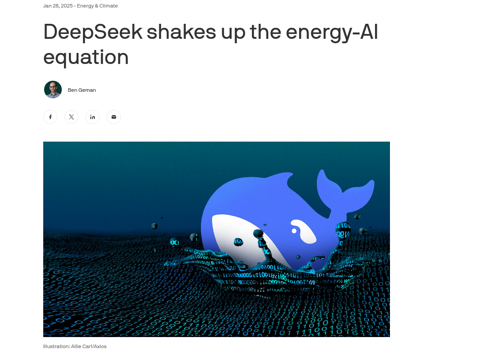
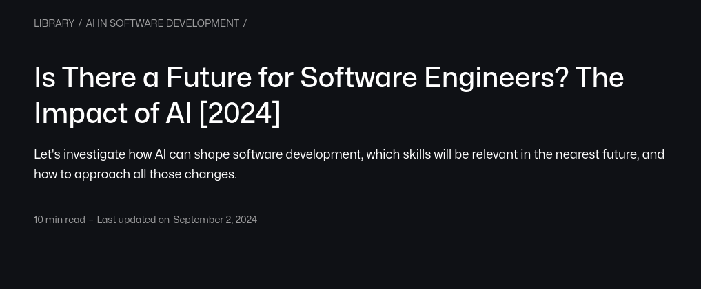
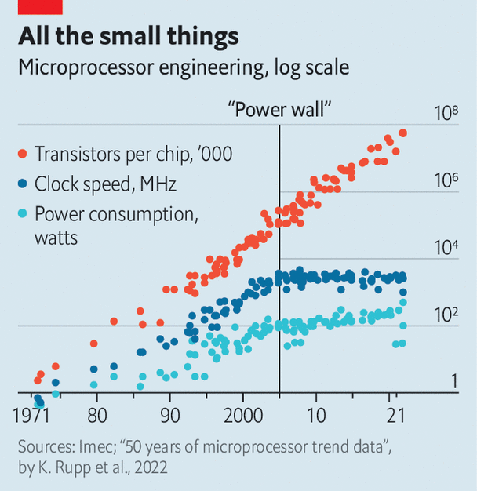
PKG or "package",
includes all on-chip energy consumption| Command | Platforms | Attaches to command |
|---|---|---|
scaphandre | RAPL, others | Sometimes |
pinpoint | RAPL, IOReport for M1, others | Yes |
perf | Linux | No |
pumas | Mac | No |
scaphandre for process-level power
metersudo julia examples/BBOB_sphere_with_baseline.jl 40 10000 50 10 256 &
sudo time scaphandre stdout -s 1 -p 10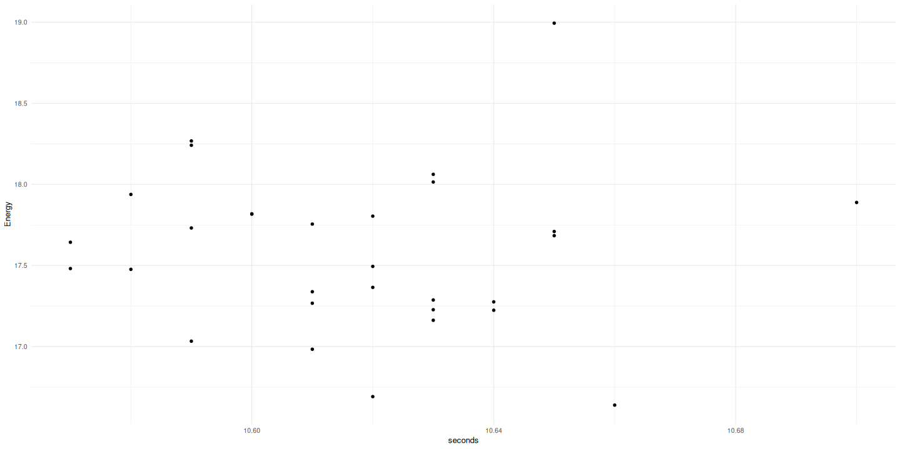
import sys
from pyJoules.energy_meter import measure_energy
from sacrypt import process_text_v0
@measure_energy
def run_process(process_func, file_path):
process_func(file_path)
if __name__ == "__main__":
run_process(process_text_v0, file_path)
sudo make me a sandwich$ sudo ./.venv/bin/python bin/sacrypt-energy.py ../data/3romanzi.txt v1
begin timestamp : 1742670844.3934789; tag : run_process; duration : 0.08716917037963867; package_0 : 3239548.0; core_0 : 55554.0; nvidia_gpu_0 : 1150
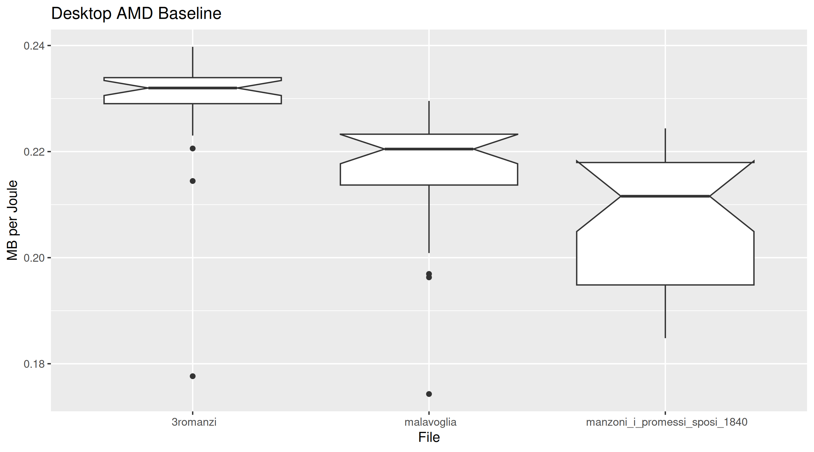
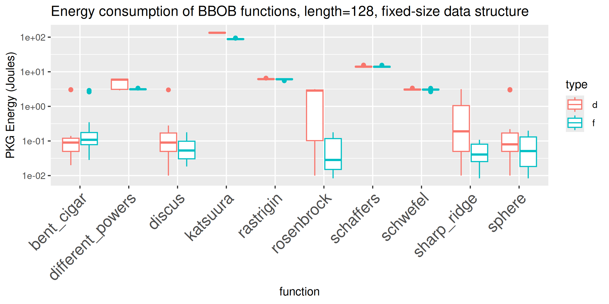
$ sudo pinpoint sleep 1
Energy counter stats for 'sleep 1':
[interval: 50ms, before: 0ms, after: 0ms, delay: 0ms, runs: 1]
10.64 J nvml:nvidia_geforce_rtx_4070_super_0
22.17 J rapl:pkg
1.00109098 seconds time elapsed 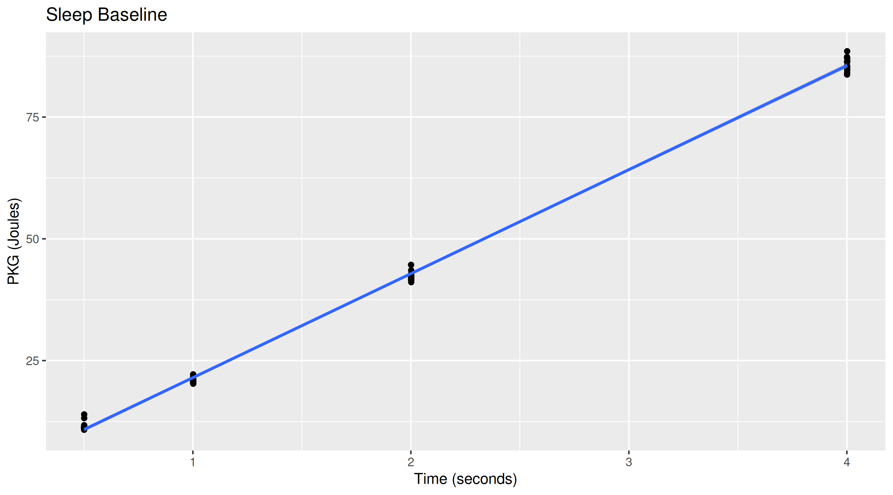
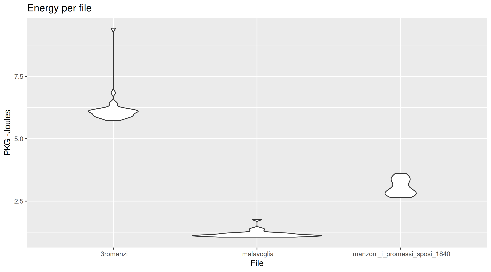
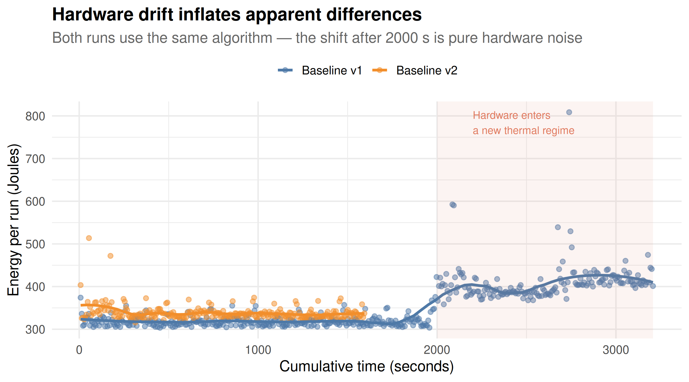
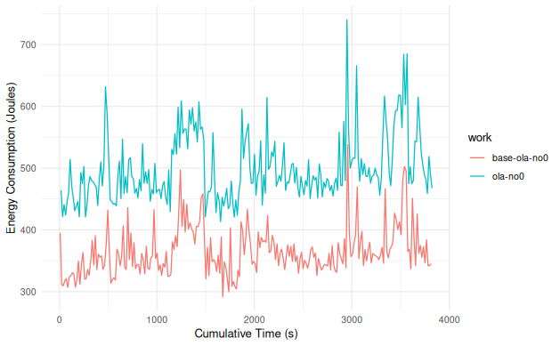
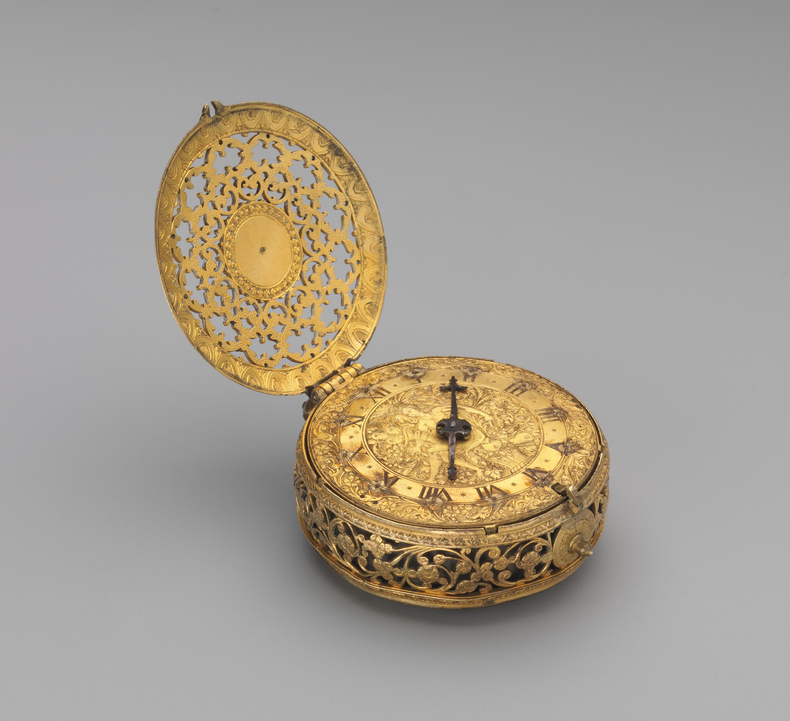
% Copilot rewrite this in
node.js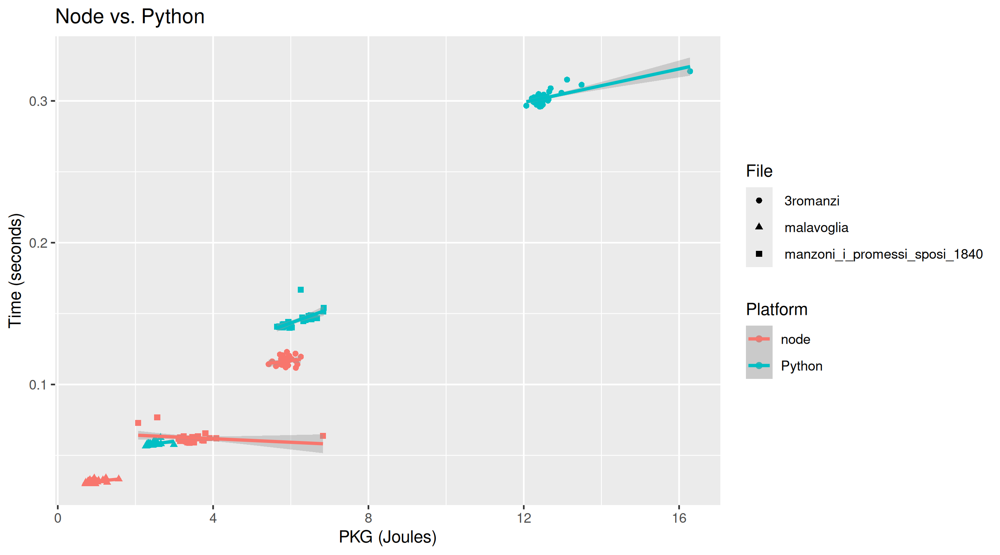
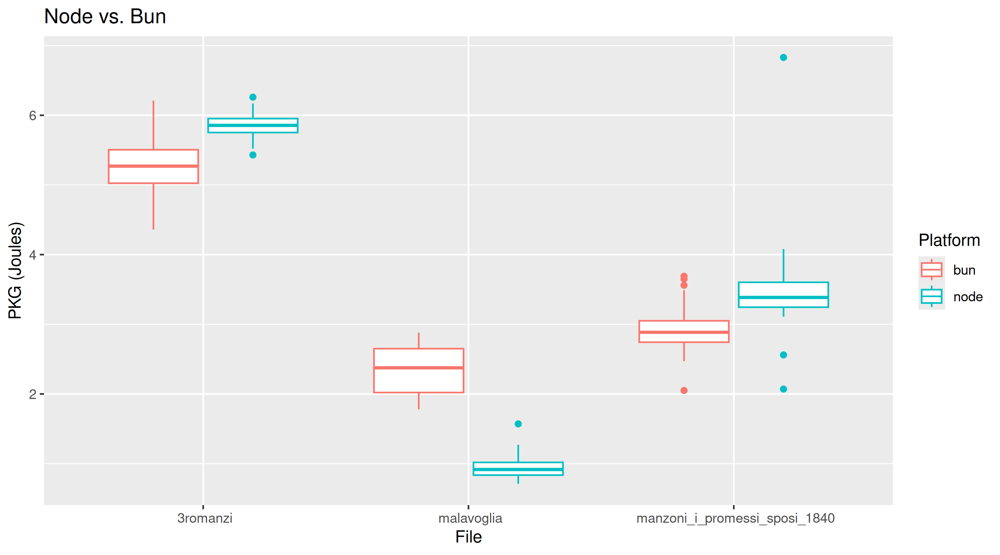
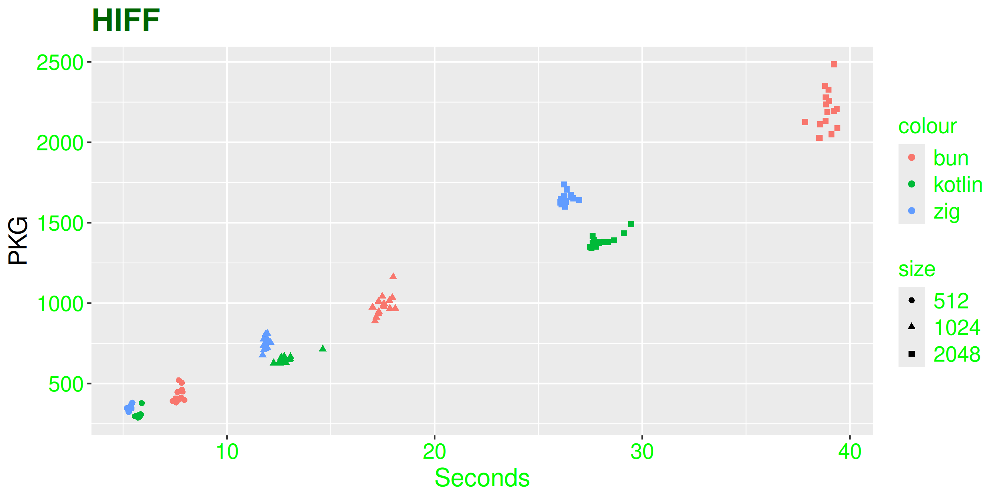